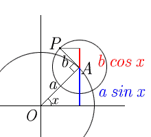

|
The figure shows the idea of constructing
the function; y = a sin x + b cos x The angle OAP is always 90 degrees. When the figure OAP rotates arround the origin, the y-coordinate of point P represents the function. |
 |
|
The applet shows the graph of y = a sin x + b cos x The initial value of a and b are 1 and 0.5 respectively. To draw the graph, press "Draw" button. |